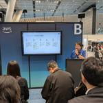

ForgeVision Engineer Blog
https://techblog.forgevision.com/
フォージビジョン エンジニア ブログ
フィード
AWS Ambassador Global Summit 参加報告～新米 Ambassadar による初参加の方向けの体験記～
ForgeVision Engineer Blog
こんにちは、こんばんわ！クラウドインテグレーション事業部の魚介系エンジニア松尾です。 今回の記事は先日シアトルで開催された「2024 AWS Ambassador Global Summit」に新米 Ambassador として参加させていただいた際の参加レポートとなります。 次回以降参加を検討されている方の参考になれれば幸いです！！ セッションの内容は全て NDA のもと全て非公開となるため記載ができませんが、現地での日々の過ごし方や参加者を退屈させないメインセッション以外の催しもありましたので、ご紹介させていただきます。 最後までお読みいただければ幸いです！ そもそも AWS Ambass…
1日前

日経クロステックNEXT 東京 2024 でいただいた Orca Security に関するご質問に回答します
ForgeVision Engineer Blog
こんにちは Orca Security 担当の尾谷です。日経クロステックNEXT 東京 2024 にていただいたご質問に回答させていただきます。
2日前
Oktaについてもっと知りたい! Okta についてのいろいろメモ。
ForgeVision Engineer Blog
CIC, WIC, Auth0 ... どれが同じで何が違うかわからない,,, こんにちは、山崎です。 今回は、 Okta社の サービス についてのもうちょい調べてみた メモ記事 です。 ※ちょっと宣伝 当社は Oktaのパートナー です！ Okta CICの導入支援、関連アプリ開発サービスをしておりますので、 本記事で興味が出た方はぜひお問い合わせください！ この記事について 下記記事で紹介した Okta CIC の 補足記事 です。 techblog.forgevision.com この記事は以下の人を対象にしています。 Okta のサービス についてざっくり知りたい人 Okta CICっ…
4日前
ここがすごい！Okta CIC(Auth0) で出来ること。
ForgeVision Engineer Blog
Okta CICを知らない人でも大丈夫！安全で柔軟性のあるログイン管理サービスの紹介。 こんにちは、山崎です。 今回は、 柔軟な開発が出来るログイン管理サービス の Okta CIC を紹介します。 ※ちょっと宣伝 当社は Oktaのパートナー です！ Okta CICの導入支援、関連アプリ開発サービスをしておりますので、 本記事で興味が出た方はぜひお問い合わせください！ この記事について Okta発の提供するログイン管理、 Okta CIC (Okta Customer Identity Cloud、 別称Auth0)の 紹介記事 です。 この記事は以下の人を対象にしています。 Okta C…
4日前

同アカウント内でのスイッチロールなら、AssumeRole アクションは要らないんですって！
ForgeVision Engineer Blog
こんにちは、AWS グループの尾谷です。クロスアカウントスイッチロールは両方が必須ですが、同アカウント内でスイッチロールする場合は、信頼ポリシーで IAM ユーザーの ARN さえ設定しておれば、AssumeRole を設定する必要がありませんでした。
18日前
Migration Toolkit for Virtualization (MTV) を使ったVM移行
ForgeVision Engineer Blog
こんにちは、プラットフォームビジネス事業グループ 浜口です。 今回はMigration Toolkit for Virtualization (MTV) について紹介したいと思います。 検証の目的 Migration Toolkit for Virtualization (MTV)とは 移行の流れについて 前提条件 移行概要 事前準備 移行元プロバイダーの追加 移行先プロバイダーの追加 移行計画の作成 移行計画の実行 まとめ 検証の目的 Broadcom社によるVMwareの買収に伴うライセンス変更によって、VMwareから他社サービスへの移行を検討する企業が増えているかと思います。 前回は「…
1ヶ月前
Azure Migrateを使ったVM移行 (2)
ForgeVision Engineer Blog
こんにちは、プラットフォームビジネス事業グループ 浜口です。 前回、Azure Migrateを使ったVM移行 (1)ではAzure Migrateを使ってVMを検出するところまでを実施しました。 今回は前回の続きとして、VMの評価と移行を実施していきます。 評価 移行 VMのレプリケート テスト移行 移行 まとめ 評価 以下の手順でVMを評価します。 ①[作業の開始] ページ >[サーバー、データベース、Web アプリ] で、[検出、評価、移行] を選択します。 ②[Azure Migrate: Discovery and assessment] で [評価] を選択し、[Azure VM]…
1ヶ月前
【日本初開催】Presence Platform Hackathon | Japan 2024参加レポート その1【ユーティリティ部門優勝】
ForgeVision Engineer Blog
今回は、Meta社主催のPresence Platform Hackathon 2024に参加してきましたので、イベントのレポートと作品について紹介します。（その1）
1ヶ月前
Amazon Kinesis Data Streams の「オンデマンドモードのデータストリーム数」を上限緩和した時のお話
ForgeVision Engineer Blog
こんにちは、AWS チームの平原です。 「夏草や 兵どもが 夢の中」 夏草が青々と生い茂ってる風景を近所でも見る季節となりましたね！ と言ったところで全然関係ないですが、今回は Amazon Kinesis Data Streams の「オンデマンドモードのデータストリーム数」を上限緩和した時のことをブログにします。 Service Quotas にないクォータの上限緩和を行う際の参考になると幸いです。 はじめに 現在携わっている案件で、Amazon Kinesis Data Streams を使用しており、オンデマンドモードで作成しています。 Amazon Kinesis Data Stre…
1ヶ月前
Azure Migrateを使ったVM移行 (1)
ForgeVision Engineer Blog
こんにちは、プラットフォームビジネス事業グループ 浜口です。 今回はAzure Migrateについて紹介したいと思います。 検証の目的 Azure Migrateとは 移行の流れについて 移行概要 検出 アカウントの準備 Azure Migrate プロジェクトの設定 Azure Migrate アプライアンスの設定 検出 検証の目的 Broadcom社によるVMwareの買収に伴うライセンス変更によって、VMwareから他社サービスへの移行を検討する企業が増えているかと思います。 今回は移行先候補の一つでもあるAzure環境に移行するサービス「Azure Migrate」を使ってVMwar…
1ヶ月前
CloudFormationの機能を活用しよう！～IaCジェネレーターによるテンプレート生成とインポート～
ForgeVision Engineer Blog
こんにちは。伊藤です。今回はIaCジェネレーターを使用したCloudFormationテンプレートの生成から行う既存リソースのインポートについて紹介いたします。IaCジェネレーターを使用して気軽にIaCに入門してみましょう。
1ヶ月前
Orca Security と Backlog の自動連携方法
ForgeVision Engineer Blog
こんにちは、Orca Security 担当の尾谷です。Orca Cloud Security Platform でアラートを検知したら、自動で Backlog に課題を起票する仕組みと、Backlog で課題を完了ステータスに変更したら、関連する Orca アラートを自動でクローズする仕組みを作りましたので、ご紹介させていただきます。
2ヶ月前
Github Actions を利用し、Terraform plan と Apply を自動化する方法について
ForgeVision Engineer Blog
今回は、AWSリソースの管理にTerraform を利用する場合を想定し、Github Actions でPlan と Apply を自動化させる場合の例とポイントをご紹介します。
2ヶ月前
Orca Security で一度に複数のユーザーが招待できるようになりました
ForgeVision Engineer Blog
こんにちは、Orca Security 担当の尾谷です。Orca のユーザー機能がエンハンスされて、複数ユーザーを一度に招待できるようになりました。
2ヶ月前
Orca Security の Internet & IAM Exposure グラフはマネージドプレフィックスリストに対応しているか？
ForgeVision Engineer Blog
こんにちは、Orca Security 担当の尾谷です。Orca Security の Internet & IAM Exposure グラフはマネージドプレフィックスリストに対応しているか、調査をしてみましたのでアウトプットします。
2ヶ月前
Orca Security のユーザーにアラート操作に関する細かな権限を付与、制限できるようになりました
ForgeVision Engineer Blog
こんにちは、Orca Security 担当の尾谷です。Orca Security のユーザーに、アラートの操作に関する細かな権限を付与、制限できるようになったので、設定方法をご紹介します。
2ヶ月前
【2024 年末までに要対応】Orca Slack 2.0 インテグレーションにバージョンアップが必要です
ForgeVision Engineer Blog
こんにちは、Orca Security 担当の尾谷です。Orca Slack インテグレーションが 2.0 にバージョンアップされたので、設定して見ました。
3ヶ月前
Orca Security の Internet & IAM Exposure グラフについて
ForgeVision Engineer Blog
こんにちは、Orca Security 担当の尾谷です。本ブログ記事では、最近、よくお問い合わせいただく Orca Security の Internet & IAM Exposure グラフをご紹介します。
3ヶ月前
Orca Security に追加されたコンプライアンスフレームワーク - 2024/07
ForgeVision Engineer Blog
こんにちは、Orca Security 担当の尾谷です。2024 年 7 月に、Orca Security に追加されたコンプライアンス・フレームワークをご紹介します。
3ヶ月前
Orca Security の Shift Left Security - Code Security で検知できるリスクの例をご紹介します。
ForgeVision Engineer Blog
Orca Security 担当の尾谷です。[f:id:otanikohei:20240716083253p:plain]今日は、AWS Summit Japan 2024 で問い合わせの多かった、Shift Left Security に関して、特に Terraform の tf ファイルに記述されたリスクを Orca がどのように指摘するかご紹介します。
3ヶ月前
AWS Summit Japan 2024 でいただいたOrca Security に関するご質問に回答します
ForgeVision Engineer Blog
こんにちは Orca Security 担当の尾谷です。大盛況だった AWS Summit Japan 2024 のフォージビジョンブースでご質問いただいた Orca Security の質問に回答します。
3ヶ月前
EC2 AutoScaling Group における ウォームプールについて
ForgeVision Engineer Blog
今回は、EC2 AutoScaling の ウォームプールを利用される場合に気をつけたいポイントを含めてご紹介します。
3ヶ月前
【The regreSSHion Bug】2024/07/01 に公開された OpenSSH 脆弱性の内容を Orca Security を使って対処しました 【CVE-2024-6387】
ForgeVision Engineer Blog
こんにちは、Orca Security チームの尾谷です。2024/07/01 に公開された OpenSSH の脆弱性を Orca Security を使って対処しました。
3ヶ月前
Amazon OpenSearch Serviceのシャード数について備忘録 ~ 課題となった事柄を添えて ~
ForgeVision Engineer Blog
こんにちは、AWS チームの平原です。 皆様は、タレントの勝俣州和さんをご存知でしょうか？ 私は勝俣さんのシャーッという気合いを込める掛け声が好きで、たまに聞くと元気が出ます！ といったところで今回は、AWS OpenSearch Serviceのシャードについて備忘も含め記事にします。 初期のシャード設定がよろしくなくシャード溢れが課題となったことについても書きますので、参考になれば幸いです。 はじめに "シャード"とは、データベースや検索システムなどでデータを分割して複数の機器（ストレージ）に分けて保管することで、 機器への負荷分散やパフォーマンスの向上となる仕組みのことです。 データを分…
4ヶ月前
【AWS re:Inforce】 - AWS Identity and Access Management が 2 番目の認証要素としてパスキーをサポートするようになりました
ForgeVision Engineer Blog
こんにちは、AWS チームの尾谷です。 先ほど AWS の新 CISO の Chris Betz さんによる AWS re:Inforce 2024 の Keynote が終わりました。 いくつかアップデートがありましたが、本ブログでは以下の Passkey が 2 つめの MFA デバイスとして利用できるようになったアップデートをご紹介したいと思います。 ※ 速報レベルの情報です。情報に誤りがあればお知らせください。適宜、ブログを修正します。 これまで AWS SSO だと Passkey による 2 段階認証が利用できましたが、今回のアップデートで IAM でも利用できるようになりました。…
4ヶ月前
Orca Security で検知した脆弱性の内容を調べました 【CVE-2024-20652】
ForgeVision Engineer Blog
こんにちは、Orca Security 担当の藤原です。前回に続き、脆弱性【 CVE-2024-20652 】について調べた結果を簡単にまとめてみました。
4ヶ月前
Orca Security で検知した脆弱性の内容を調べました 【CVE-2024-0567】
ForgeVision Engineer Blog
こんにちは、Orca Security 担当の藤原です。前回に続き、脆弱性【 CVE-2024-0567 】について調べた結果を簡単にまとめてみました。
4ヶ月前
Orca Security のレポート一覧のページにフィルタ機能と検索機能が追加されました
ForgeVision Engineer Blog
こんにちは、Orca Security 担当の尾谷です。Orca Security のレポート一覧のページにフィルタ機能と検索機能が追加されたのでご紹介したいと思います。 また、インベントリから出力できるレポートについてもご紹介します。
4ヶ月前
AWS Summit Japan 2024 に出展します！
ForgeVision Engineer Blog
こんにちは！ 営業部の鈴木です。 こちらのページ でもご紹介していますが、フォージビジョンは AWS Summit Japan 2024 に今年もブロンズスポンサーとして出展します。 日本最大の AWS イベント 毎年延べ30,000人が参加する本イベントは、6月20日(木)、21日(金)の2日間にわたり、幕張メッセで開催されます！ AWSに関して学習・情報交換ができる、クラウドでイノベーションを起こすことに興味がある全ての皆様のためのイベントとなっております。 昨年の出展の様子はこちらをご覧ください！ techblog.forgevision.com 展示概要 フォージビジョンのブースでは、…
4ヶ月前
Orca Security に追加されたコンプライアンスフレームワーク - 2024/05
ForgeVision Engineer Blog
こんにちは、Orca Security 担当の尾谷です。2024 年 5 月に、Orca Security に追加されたコンプライアンス・フレームワークをご紹介します。
5ヶ月前